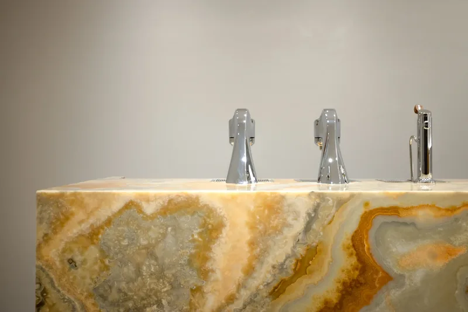

Progettazione di bar, ristoranti e negozi
Un locale deve funzionare per chi ci lavora ogni giorno e farsi ricordare da chi entra. Lo studio progetta bar, ristoranti, negozi e spazi commerciali a Modena e in tutta Italia, curando insieme immagine, organizzazione degli spazi e dettagli costruttivi.
Cosa comprende
- Rilievo del locale e verifica dei vincoli dell'edificio.
- Organizzazione degli spazi: bancone, zone di lavoro, percorsi, sala e servizi.
- Scelta dei materiali e disegno di banconi e arredi su misura.
- Render e realtà virtuale per valutare l'atmosfera del locale prima di costruirlo.
- Pratiche edilizie e direzione lavori.
Progetti
In Corso Canalgrande, nel centro storico di Modena, lo studio ha progettato Anita, bar e ristorante (2025). Il bancone e i volumi in onice organizzano la sala e ne diventano il segno riconoscibile.
A Napoli, per il concorso bandito dall'ADISU Campania, lo studio ha proposto la Mensa universitaria De Gennaro: una mensa con caffetteria e aule studio, organizzata intorno a una corte.

Bar e ristorante

Bar e ristorante

Bar e ristorante

Concorso
Parliamo del tuo progetto
Scrivi a info@samuelesilvestriarchitetto.com o chiama il +39 366 493 8286. Lo studio è a Modena, in via Asiago 58, e segue progetti in tutta Italia.